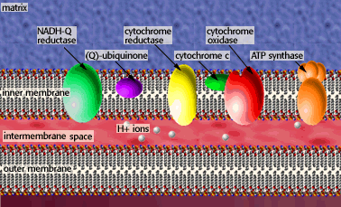

Metabolism Problem SetProblem 4 Tutorial: DinitrophenolDinitrophenol (DNP) is an uncoupler, or has the ability to separate the flow of electrons and the pumping of H+ ions for ATP synthesis. This means that the energy from electron transfer cannot be used for ATP synthesis. Fifty years ago, DNP was given as a drug to help patients lose weight. Why does this work? Why would this be dangerous? Dinitrophenal's effects on metabolismIn oxidative phosphorylation, the flow of electrons from NADH and FADH2 to oxygen results in the pumping of H+ from the matrix to the intermembrane space. This gradient of H+ can produce ATP by flowing through ATP synthetase in the mitochondrial inner membrane.  
Dinitrophenol disrupts the H+ gradient reducing ATP synthesis. Under these conditions, much of our food that we eat could not be used for ATP synthesis are we lose weight. However, too much inhibitor and we could make too little ATP for life. The difference between weight loss and death is only a small concentration change in dinitrophenol, making the drug dangerous. |